Developing a language learning product to help people stay motivated and learn languages efficiently.
Many people have experienced learning a foreign language or aspire to do so. They're motivated when they start learning, but they may stumble in their learning journey or realize that they lack enough time. These hurdles lead them to give up on learning the new language before reaching a level of satisfaction with their language proficiency.
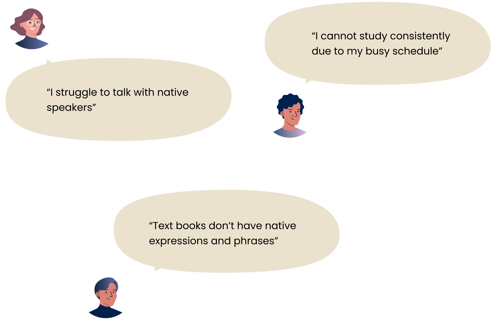
I've learned several foreign languages, and I know many multilingual people. I've also seen friends give up on learning new languages despite starting with clear goals. I wish there was a product to help them stay motivated and learn efficiently.
After conducting these research methods, I wrote down every data point or idea on a separate sticky note and grouped related notes based on their similarities. Creating an affinity map helped to better understand users and their needs, to define product requirements, or to plan future product features.
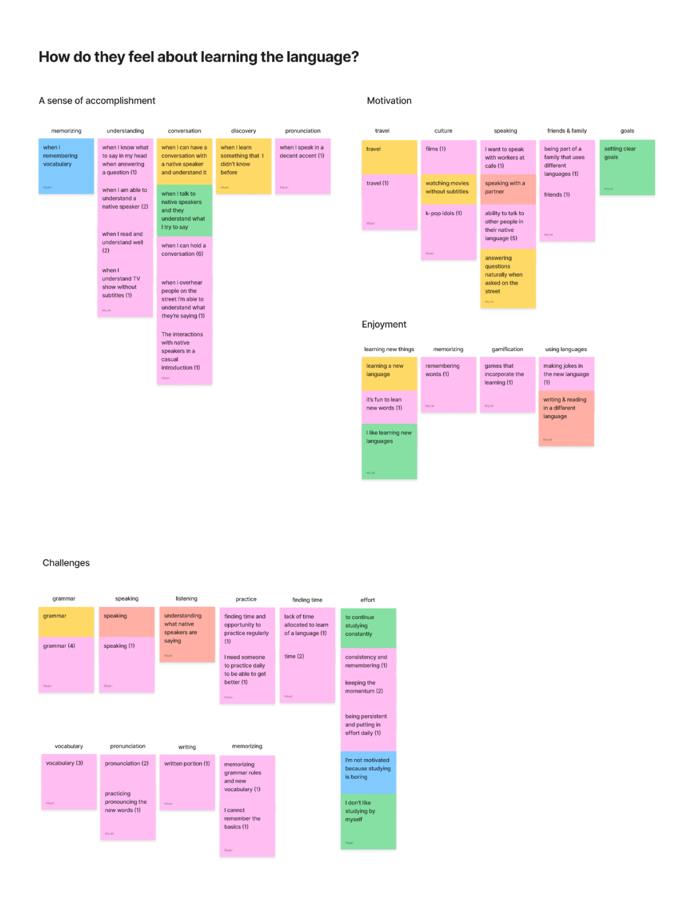
I compared 3 language websites to understand how they are competing by identifying features and distinctive aspects aimed at fulfilling user needs.
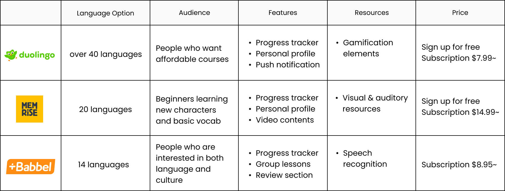
I conducted user interviews, surveys, and competitive analysis to understand what is necessary for users to achieve their goals and what features are suitable.
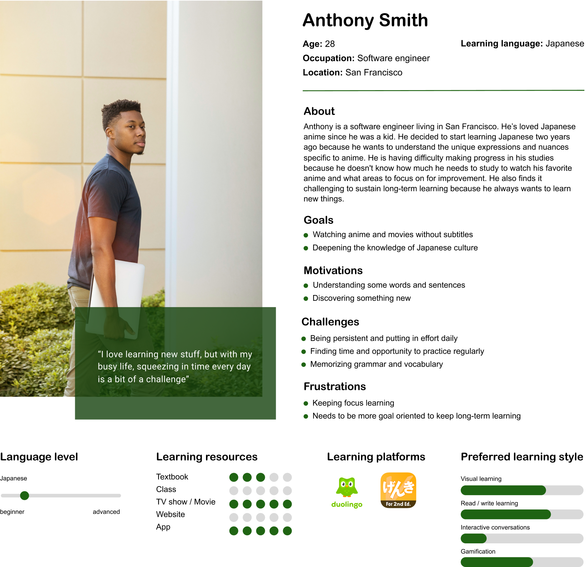
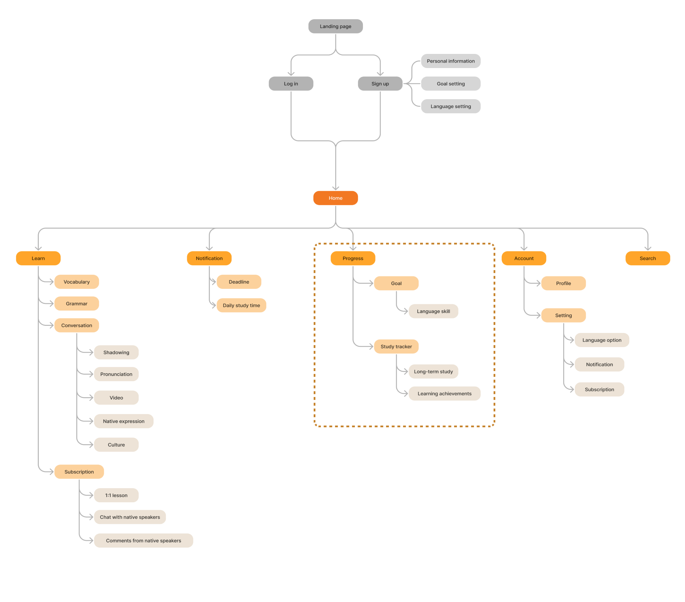
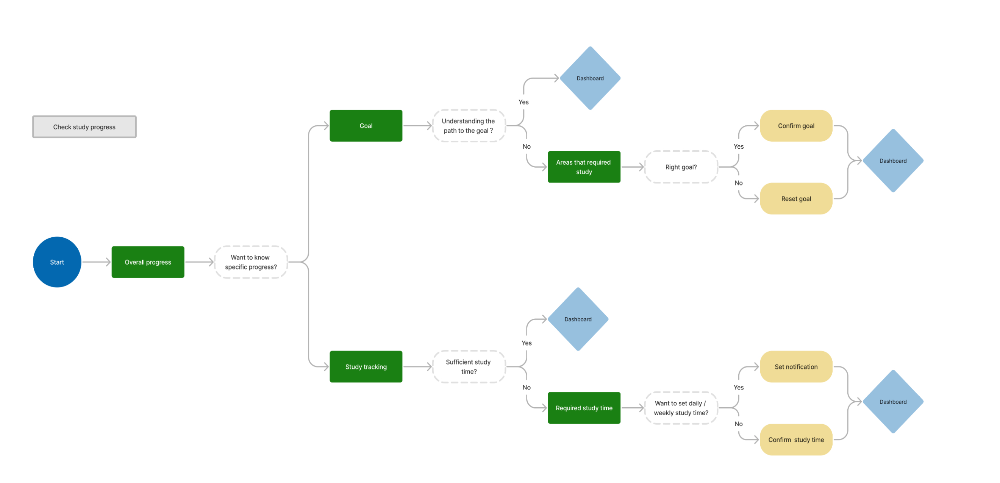
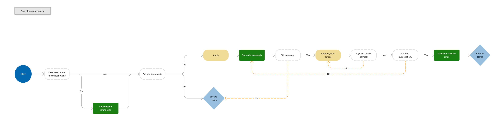
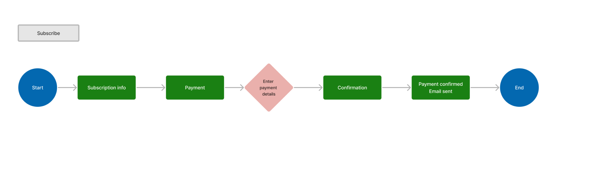
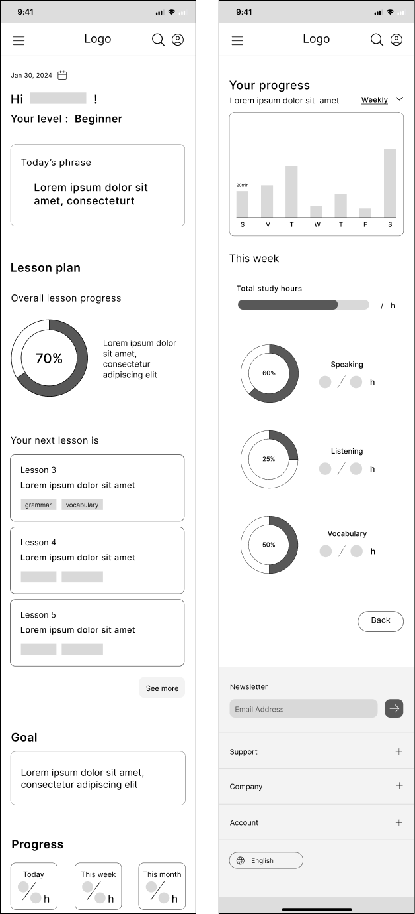
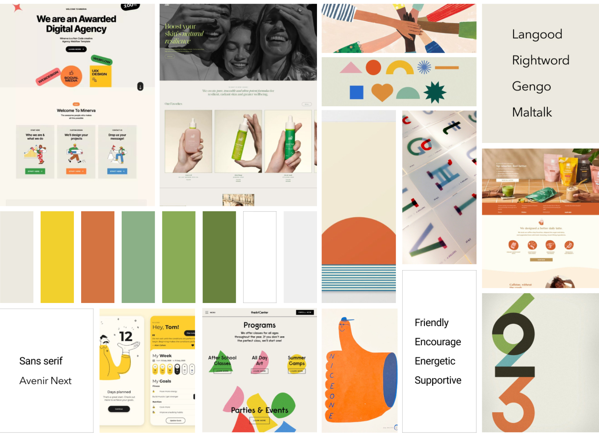
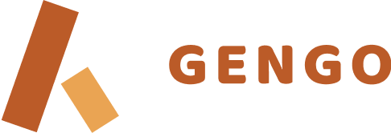
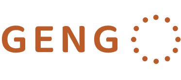
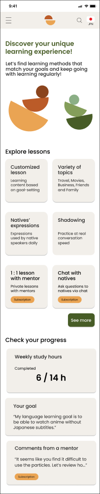
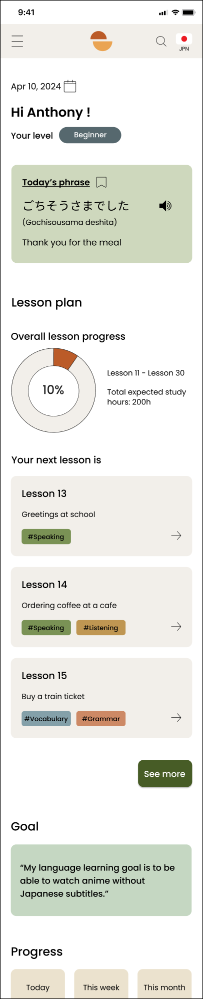
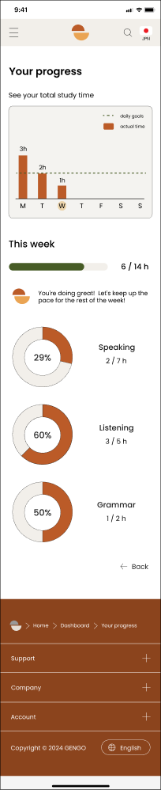
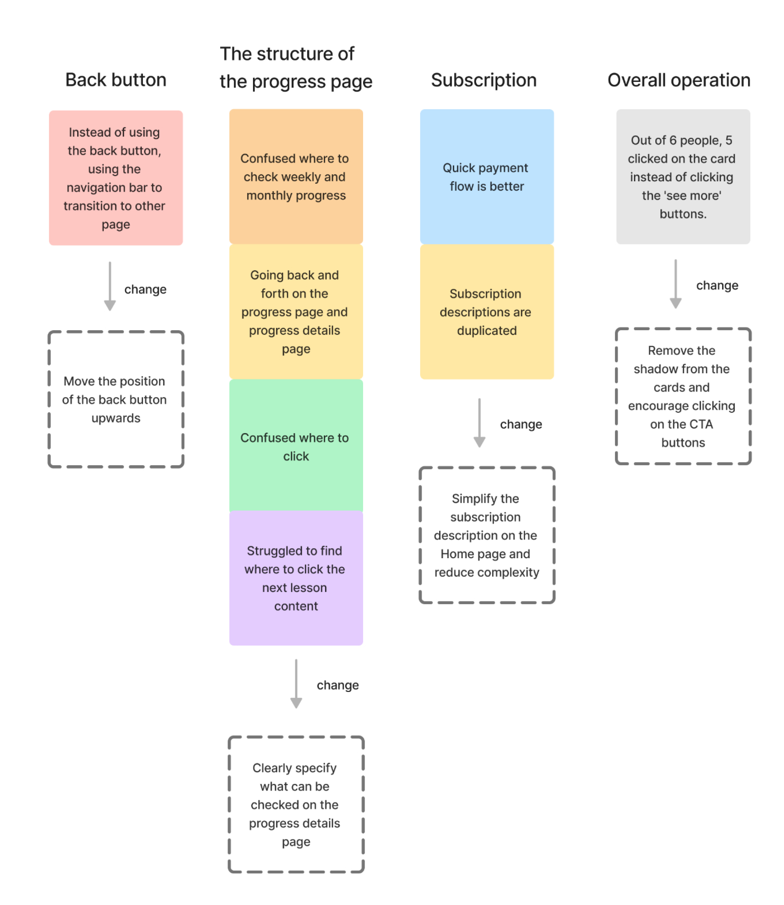
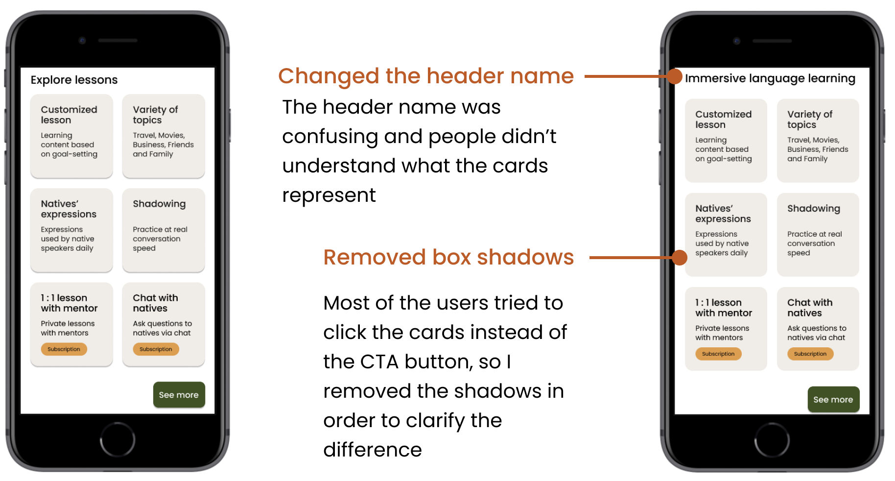
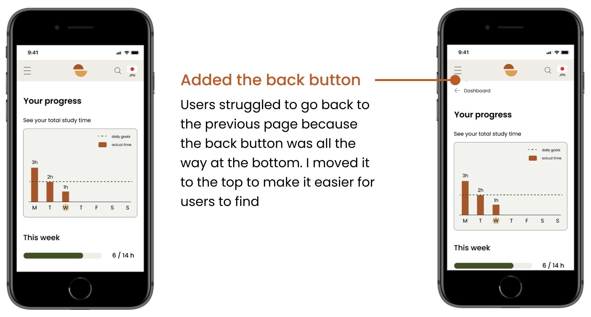
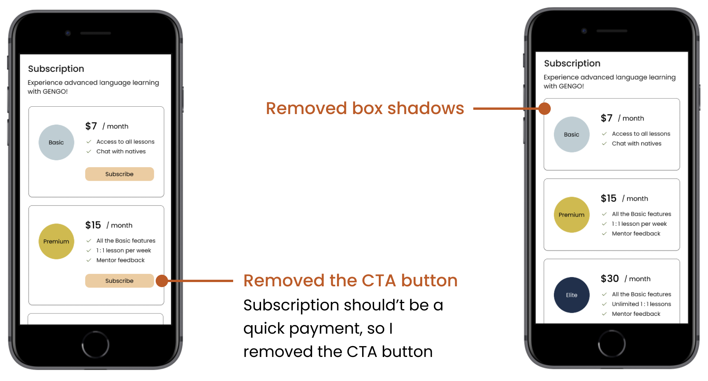
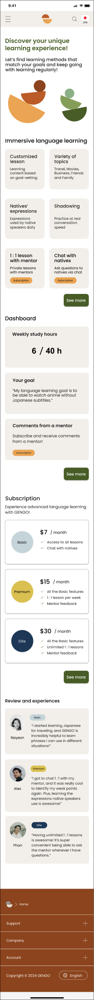
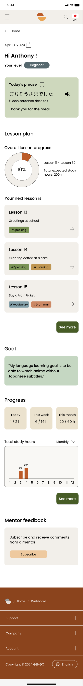
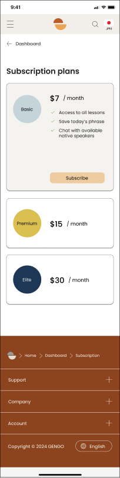
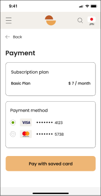
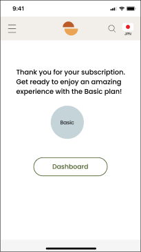